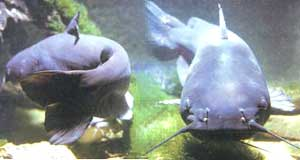
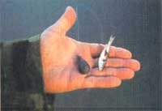
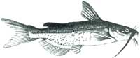
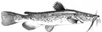
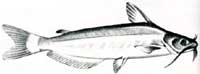
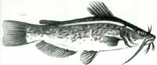
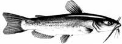

As Big As A Man
Rising above its lowbrow
By David Petersen
May/June 1988
"Well, the days went along, and the river went down between its banks again, and about the first thing we done was bait one of the big hooks with a skinned rabbit and set it and catch a catfish that was as big as a man, being six foot two inches long, and weighed over two hundred pounds. We couldn't handle him, of course; he would 'a' flung us into Illinois. We just set there and watched him rip and tear around till he drownded."
That's Mark Twain, of course, and while it might seem that he's wildly exaggerating the size of Huck and Jim's big catfish for literary effect, the old master was in fact merely pushing the limits of reality. For Twain's Mississippi was, and remains, an exceptionally fertile environment for the growth of giants among the two largest catfish species native to North America, the blue and the flathead.
The International Game Fish Association's rod-and-reel record for the blue is 97 pounds; for the flathead, 98. But larger, much larger cats have been taken by non-IGFA-sanctioned methods such as trotlines, bank poles and hand lines.
The heaviest verified weight for a blue that I've run across was a behemoth that weighed 150 pounds taken (method unknown) from the Mississippi in 1879. In this century, a 130-pound blue hauled from Tennessee's Ft. Loudon Reservoir in 1976 remains king. And a five-foot-long, 106-pound flathead fell to a trotline in Oklahoma's Lake Wister in 1977. There are even bigger cats still out there, no doubt. Somewhere, probably lots of somewheres, these monsters are feeding voraciously and growing to legendary proportions.
It was as big a fish as was ever catched in the Mississippi, I reckon. Jim said he hadn't ever seen a bigger one. He would 'a' been worth a good deal over at the village.
They peddle out such a fish as that by the pound in the market-house there; everybody buys some of him; his meat's as white as snow and makes a good fry."
And that it does. To my taste, there is no more delectable freshwater fish than a channel cat taken from clean (though not necessarily clear) water. Sadly, the catfish has long suffered a lowly image, branded by snob anglers as a "trash" or "rough" fish simply because it lives and feeds near the bottom and scavenges as well as hunts. Consequently, Americans have long been lured into viewing the catfish as an undesirable, if not unclean, food.
But oh, the awakening of late!
Today, both catfishing and catfish dining are enjoying a surge in popularity, while catfish farming-reflecting America's expanding appetites-is one of the fastest-growing agricultural industries in the nation. According to Bill Alien, Jr., of the American Catfish Institute (down in friendly little Belzoni, Mississippi), cat growers in 1987 produced and sold 280 million liveweight pounds of fish. With processed meat averaging about 54% of liveweight and selling wholesale for $2.05 a pound, catfish farming last year was a $310 million industry.
In my little southwestern Colorado town, fresh channel cat retails for $4.87 a pound. Compare that to $3.25 a pound for one of the elite of freshwater game fishes, the rainbow trout. The marketplace is finally getting around to confirming what many anglers have known all along: Catfish tastes better than trout.
While the warm-water South remains the catfish capital of the world, decades of transplanting have established respectable populations nationwide. Wherever you happen to live in the contiguous 48 states, you won't have to travel too far to find lucrative angling for one or more of the five primary (of 26 total) North American freshwater species-blue, white, channel, flathead and bullhead. While each has its own preferred habitat and foods, all can be taken with similar tackle, techniques and baits.
My own catfishing memories go back more than 30 years and stretch across 750 miles to a reservoir that was then at the outskirts of Oklahoma City. Since I was too young to drive, the task fell upon my understanding mother to haul my fishing pal, Coop, and me out to Lake Overholser on sunny Saturday mornings. Most often, Coop and I would fish all Saturday night and through most of Sunday. It kept us off the streets and out of trouble.
Since 1941, Lake Overholser has regularly produced flatheads in the 40-to-50-pound class and better. But it wasn't the reservoir proper that Coop and I were interested in so much as the big tailwater area, a small lake in itself, that lay at the foot of the towering concrete dam-a tawdry and fetid but exceedingly fishy place called the Gar Hole.
The Gar Hole held a certain funky charm for the devoted, part of which was the pong of rotting fish entrails, stink baits and human urine that kept people away in crowds. The still, tea-colored water was deep near the dam and alive with fish that had entered through the by-pass above the dam or swum up from the South Canadian River below. First was the place's namesake, that toothy, prehistoric monster, the alligator gar. There was also a plenitude of carp, buffalo, shad and other rough species. And, too, there were bonafide game fish-white bass, black crap-pie and walleye. But of singular importance to Coop and me were the catfish-flatheads and channels aplenty, plus the occasional big blue.
In addition to the ripe atmosphere and rich fishing, a part of the mystique of the place arose from a doubtful local legend. It was this: A few years before, a state-employed diver, inspecting the base of the dam in the deepest part of the Gar Hole, had gotten mask-to-whiskers close to a flathead so incredibly large-"a catfish as big as a man"-that he fled forthwith and swore never to wet a flipper in those evil waters again.
Of course, no one seems to have heard the story directly from the diver himself, or even to have known his name-but such is the iffy stuff of legends. And no matter, for I have a Gar Hole legend of my own, and it spooks me as thoroughly in the remembering as it did that July night in the late 1950s when it happened.
The action had been slow to just so-so all day Saturday, picking up only slightly with dark. After a few more hours of sitting around telling fish stories, slapping mosquitoes, waving away moths and watching our taut, bottom-set lines by the light of a hissing Coleman lantern, Coop and I finally decided to catch a little sleep, in shifts, taking turns staying up to watch the lines. Well after midnight, while Coop snoozed and I fought to stay awake, I decided to go for a swim. Sort of.
The heyday of fishing from inner tube floats was still several years in the future, but Coop and I had cobbled together a prototype cutting an hourglass-shaped seat from a pine plank and lashing it with cotton clothesline to a used truck inner tube. For propulsion we had only swim fins, which provided a slow, backwards progression through the water.
After rigging my stout bait-casting rod with a #2 treble hook baited with chicken innards soaked in coagulated beef blood, I stepped out of my jeans, grabbed the tube float, and backed into the Gar Hole. The harsh white light of the lantern fanned out across the water for a good distance, providing a minilighthouse to bring me safely back to camp.
Guided by the tinkle of a slip of water gliding over the mossy spillway, I paddled up close against the base of the dam to the deepest water. Once on target, I released the lock on the open-face reel and held a thumb lightly on the spool as the big sinker pulled the generous glob of bait to the bottom.
For a long while I floated quietly, moving little, my bare white legs dangling in the black water and being nipped at by curious fish. If I could get my hands on the little blighters, I remember thinking, I'd convert them into cut bait in a flash of my Boy Scout knife.
There was no sharp strike, just a momentary probing tug and a brief cricket-chirp from the drag. Snapping to, I quickly stripped out an arm's length of line-big catfish dislike meeting resistance when they test a bait-and waited. After a while the fish returned, took the bait and ran with it. I answered by engaging the reel lock and hauling back on the heavy fiberglass rod.
Holding up its end of the impromptu bargain, the fish fought back-tugging, twisting and rolling in the classic ballet of big, well-hooked cats. The front of my tube dipped, and dipped again, and again, until I realized I was in motion, being towed along in jerks, like a human bobber.
You've not lived until you've hooked into a catfish of size on a hot dark night while seated in a bepatched inner tube with your naked legs flailing the water in desperate search of a nonexistent purchase. Stubbornly, stupidly, I refused to release the reel lock and play the monster against the tension of the drag. I wanted to horse him in straight off.
In accordance with Petersen's First Corollary to Murphy's Law (if anything can go wrong, it will happen at the most inconvenient time), the lantern away back on shore chose that moment to consume the last drop of fuel and flicker out. It was then I flashed on the Legend of Gar Hole-"a catfish as big as a man"-and promptly panicked.
After releasing the reel lock (you bet) so that the fish could run and I could get a moment's slack, I began backpaddling for the dark spot where I thought camp should be. If I could get my feet back on solid ground, I reckoned, I could out-tug this tugboat of a fish. After all, I was using 80-pound-test line.
But my reel held only 50 yards of the heavy stuff, and it reached its end with a jolt that set my tube bobbing and moving again, back toward the depths. Growing frantic, I white-knuckled the rod with one hand and let go the other to fumble for the lanyard around my neck. I found the Boy Scout knife that hung there, opened its biggest blade with my teeth and attacked the taut line. It snapped like a bowstring.
I wasn't aware that I'd been yelling and jabbering until I heard Coop's answering whoops. Guiding on the bouncing star of his flashlight, I beat my way over the water like a stern-wheeler, splashed ashore and-like the spooked diver from the legend-swore aloud that never more would I set foot in the evil waters of the Gar Hole.
Murphy's Ultimate Principle states that, by definition, when you're investigating the unknown you never know what you'll find. And that's the moral to this true fish story: While few cats approach tube-towing size, the potential for hooking into a catfish as big as a man is always waiting there at the business end of any properly rigged line dangled in catty water, lending a special mystery and excitement to the sport.
Whether you're after Moby Cat or merely want some wholesome fun and a panful of first-class fillets, here's how it's done.
Tackle
The traditional American catfishing tool, immortalized in Norman Rockwell paintings, is the cane pole. Even today it's a good rig for youngsters and anyone fishing for bullheads from shore. At the opposite extreme, trophy catfishers, those who concentrate on the really big boys, prefer light saltwater trolling or surf-casting gear. Another popular rig among die-hards is a stiff fiberglass or graphite "boat" rod mounted with a beefy bait-casting reel with star (adjustable) drag and a level-wind mechanism.
Such big-gun outfits will turn the trick, all right, but are overkill for everyday catfishing. Any sturdy, inexpensive fiberglass rod and medium-sized bait-casting or spinning reel wound with heavy line (12- to 30-pound test is common) will handle the majority of cats with aplomb.
If you're starting from scratch and wish to purchase just one inexpensive rod and reel to use for all types of freshwater angling, catfish to trout, you can't go wrong with a medium-weight spinning outfit. A closed-face spinning rig is easy to cast, resists backlash and can handle a variety of line and rigging weights.
Rigging
Untold thousands of catfish have been taken on standard, single-point hooks. But due to the large, globular nature of some of the best catfish baits and the size of the quarry's maw, you'll generally do better using a treble, or three-point, hook. Anything from a big #2 down to a #8 is appropriate, depending on the size of catfish you're after. A good starting size is the #6.
If you get nudges and nibbles but no solid strikes, or miss the strikes you do get, try switching to a smaller hook. Remember, you can catch a big fish on a small hook easier than you can catch a small fish on a big hook.
Since the upper jaw of a catfish is filled with tiny, sharp teeth, you'll need a short length of tough, abrasion-resistant leader just above the hook. You can make your own from fine copper wire with a double-barreled swivel at one end and a snap-swivel at the other, but it's easier simply to buy commercial vinyl-coated steel leaders already made up. They're cheap.
To save knot-tying, wasted line and lost fish, use swivels at all connecting points-hook to leader, leader to line, sinker to line, dropper(s) to main line.
Sinkers come in a myriad of shapes-including round, flat, bell, egg and pyramid-but only three basic styles. Most common are those with embedded metal eyes for attaching line or swivel. Instead of an eye, the slip sinker has a generous tunnel bored through its center so that the line can slip freely back and forth. The third basic sinker type friction-clamps directly onto the leader or line (the smaller sizes of this style are called split-shot) and has little use in catfishing.
Baits
Catfish will eat just about anything, dead or alive, moving or inanimate. Stench is no obstacle. Still, when considering baits, it's a mistake to operate on the assumption that cats are exclusively scavengers, for above all they are active and efficient predators.
Over the years, I've taken nice catfish on worms, grasshoppers, crickets, crayfish, frogs and toads, minnows, doughballs, cheese, shrimp, chicken entrails, coagulated beef blood, liver, whole perch, cut fish, chunks of Ivory and Castile bar soap, commercial stink baits, artificial lures and combinations of the above. Unlike Huck and Jim, I've not tried skinned rabbit, though I know trotliners who have. Whatever your choices, always bring along a couple of backup baits, so that if one doesn't raise any action, you can try another, and another.
Doughballs are a clean, inoffensive, inexpensive and effective form of catfish bait. You can make up a batch yourself by dipping (not soaking) a few slices of whole wheat bread in water, then kneading the soggy mess until it firms up to the consistency of modeling clay.
Should your doughballs catch more carp than catfish, work a little beef blood, Limburger cheese or other stinkum into the dough to increase its attractiveness to cats and discourage sweet-toothed rough fish. (Since chunks of cut fish of any kind make excellent catfish bait, consider sacrificing one of your accidental carp to that end.)
Live minnows can be impaled through both lips on a single-barbed hook, or you can beg a bucket of corpses from a bait shop and gob as many as possible onto a large treble or single-barbed hook. This is an especially effective bait for big cats.
Back in the Gar Hole days, the only commercial stink bait around was Catfish Charlie, a puttylike blend of blood and who-knows-what. Today, Catfish Charlie comes in a host of colorfully named flavors, including Full Stringer, Pole Cracker, Super Cat and (my favorite) Blood Grubbies.
The trouble with stink baits is that, well, they stink. They're also messy and often difficult to keep on a hook. That's why the innovative Katfish Lure, marketed by the Little Stinker Bait Company of Lexington, Oklahoma, is finding an eager and growing market. The Katfish Lure is a teardrop-shaped soft plastic balloon rigged with a double hook and an eyed barrel swivel. The hook's two barbs face inward, making the lure weedless, and when the balloon is injected with Little Stinker Kat Katcher (kute, eh?) from its no-mess squeeze tube, you have a deadly catfish lure that "looks real, feels real, smells real." And, if you're careful, your hands stay clean and odorless.
As you still fish, drift or work the Katfish Lure slowly along the bottom, as you would when fishing a plastic worm for bass, the Kat Katcher stinkum oozes slowly from pinhole perforations in the lure and creates a scent trail to lure 'em in. This setup is not only clean and easy to use, it can be deadly in practiced hands.
Technique
Big cats like to hang out near stumps, rocks, sunken logs and other underwater cover. You'll do well to locate and fish near such submerged structures in the deepest holes you can find during daylight hours, and over or just off shallower shoals and weed beds at night. If you fish for a while in one spot with no luck, move on a bit and try again. Keep moving until you find fish.
If it's legal in your state, you can chum. Chumming involves tossing small bits of odoriferous bait into the water where you're fishing to lure in the lunkers and entice them into feeding heedlessly. Dead minnows chopped or squished, rough fish cut into tiny bits and blood all answer the purpose. The cat's eight "whiskers" are in fact highly developed olfactory sensors capable of detecting food from a distance in even the muddiest water.
Although cats of all species are primarily bottom-dwellers, they don't, as the uppity mongers of the catfish-as-trash-fish myths would have us believe, spend their lives scavenging in mud and muck. Rather, they invest most of their time patrolling lazily a foot or two above the bottom, and occasionally even rise to feed in the middle depths or at the surface. Thus, you'll do well to start by positioning your bait near the bottom and fishing with a tight line (no bobber, no slack).
The most straightforward way to accomplish this is to fasten a bell sinker to the end of your line, then attach the hook to a foot-long dropper leader two or three feet or so up from the sinker. Cast out as far as you can, allow time for the sinker to bottom out, then reel in slowly until the line becomes mildly taut. This will position the bait just about the right distance above the bottom. As a bonus, since the bait is dangling from a dropper attached to a tight line, you'll see or feel the line move at even the slightest nibble. If you're alert.
The only significant problem with this setup is that larger and wiser cats aren't blind to the resistance offered by a tight-lined bait, frequently prompting them to drop your offering and leave. A variant rigging technique beats this problem by placing the leader and hook at the end of the line and using a slip sinker above the leader. The swivel attaching line to leader will keep the sinker from riding down onto the bait, and since the line can move freely without having to drag the weight of the sinker, a fish will meet less resistance when it tests the bait. But then, your bait will be lying on, rather than floating above, the bottom. Nothing's easy.
Possibly the most effective rod-and-reel catfishing method of all requires a boat or tube float. Set your rig to fish near the bottom, and allow the current or breeze to move your craft (be it ever so humble) ever so slowly along. You'll cover a lot of water this way, actively advertising your bait.
One of the most agreeable character traits of catfish is persistence. If you get a strike and, for whatever reason, fail to connect, don't immediately reel in to check your bait. Wait awhile, at least five minutes. More often than not, the cat will come back.
Cleaning Your Catch
Take care when handling catfish, big or small, alive or dead, for all species have needlelike spines at the fronts of the dorsal and pectoral fins. While a stab won't kill you or even make you sick, a cat-spine puncture burns like hellfire for what seems an eternity and can easily become infected. No-nonsense catters keep wire-cutting pliers in their tackle boxes to clip off the offensive spines and have it done with.
The safest way to handle a catfish, no matter its size, is to stick your thumb bravely into its mouth and grasp the lower jaw. Don't worry about being bitten; I've jammed my fist into the mouths of 20-plus pounders and never come away with anything worse than a sandpaperlike scrape.
Since catfish have no scales and relatively little fishy odor, I'd rather clean a dozen of them than one bass. Still, the skin is rubbery and clings to the meat with tenacity; it must be pulled off with pliers (the same pair you used to clip off those nasty spines). The skinning operation is made cleaner, faster and easier with a skinning board, which need be nothing fancier than a soft pine plank of a size appropriate to the fish.
First, make certain your cat is dead; some species have nine lives and can survive several hours out of water. A sharp blow on the head should suffice (use those handy pliers), or jab a knife or ice pick smartly into the brain (between and behind the eyes).
After gutting the fish, use a sharp knife to slit the skin all the way around just behind the head. Next, make a shallow incision down the full length of the back, cutting around the fins. Now drive a nail or an ice pick through the cat's head to anchor it to the skinning board, and use your pliers to peel back the skin, working from stem to stern.
Finally, remove the head and fins.
Small catfish are usually fried whole, medium-sizers are best filleted, and big honkers can be filleted or cut crosswise into steaks. (Catfish bones are prominent and easy to eat around.)
Southern-fried and served with hushpuppies, coleslaw and iced tea ... lordy.
What with modern tackle and the newfangled commercial lures and all, catfishing has changed considerably since the laid-back days of cane poles and night crawlers. Even since the days of my youthful Gar Hole adventures. Now catting is (or can be) a clean, respectable sport. As with most of the changes we call progress, I greet this with mixed emotions.
Take what has happened to the good old funky Gar Hole of my boyhood memories. It is no more. Sure, the physical place is still there, both the tailwater pond below the dam and the reservoir above. And both, I hear tell, still host big cats. ("They break lines and tear up gear on almost a daily basis," an Over-holser ranger told me during a phone conversation recently.) But now the Gar Hole's once-deep redoubts have been shallowed by silt. And the landscape round about has been cleaned up, sanitized, groomed and pressed into public service as the uppermost in a chain of eight riverside parks called the String of Pearls. It's hard to imagine the Gar Hole as a park, much less a pearl.
That's progress for many. But for me such change evokes a sense of personal loss, insults memory, dilutes nostalgia-though I won't deny the public gain. Still, there are a great many other magical cat holes-Twainian Mississippis of the mind, if you will-yet remaining around this grand land. Funky, uncrowded places where the memories and personal legends of tomorrow are being forged even now. And down there in the deepest, darkest waters of your favorite fishing hole or mine, almost certainly, lurks a monster like Huck and Jim's and the Gar Hole diver's. A catfish as big as a man.
|
 © TOM MCHUGH, 1973/DALLAS AQUARIUM/PHOTO RESEARCHERS, INC. This one's not as big as the 200-pound monster Huckleberry Finn claimed to have snagged, but it’s a hefty load of fish fry. |
 STEVE PRICE Live minnows are just one of many productive catfish baits. |
 STEVE PRICE CHANNEL CATFISH |
|
 KAY HOLMES STAFFORD Leapin' (79-pound) catfish |
HEATHER SMTH FLATHEAD CATFISH |
 KAY HOLMES STAFFORD FLATHEAD CATFISH |
|
 KAY HOLMES STAFFORD BROWN BULLHEAD |
 KAY HOLMES STAFFORD WHITE CATFISH |
 KAY HOLMES STAFFORD |